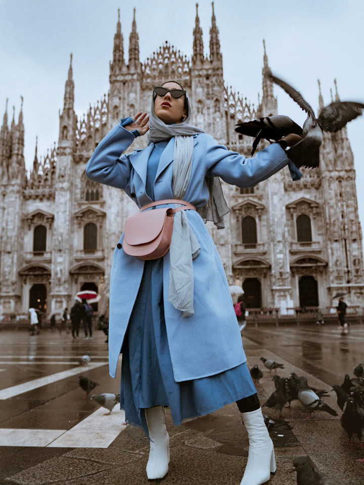
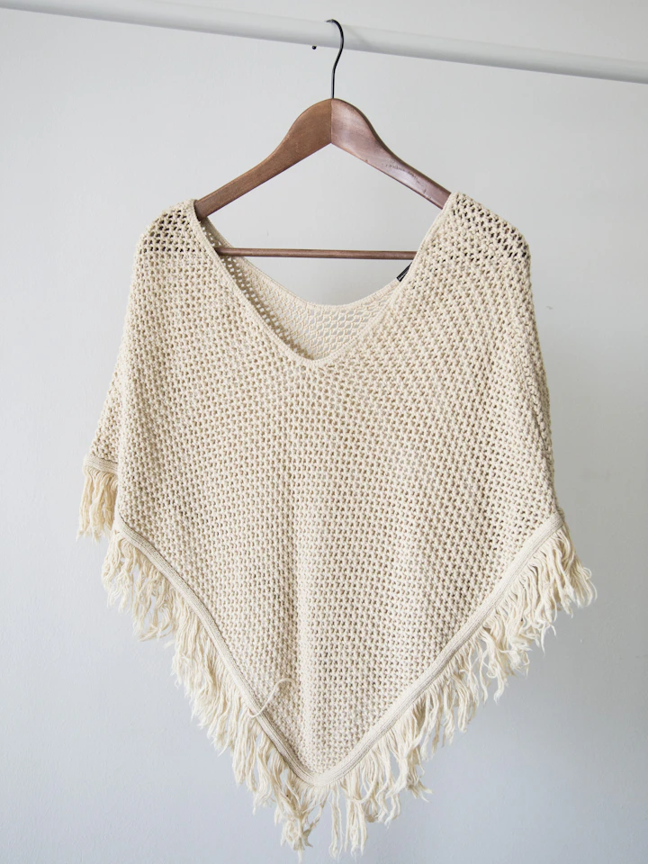
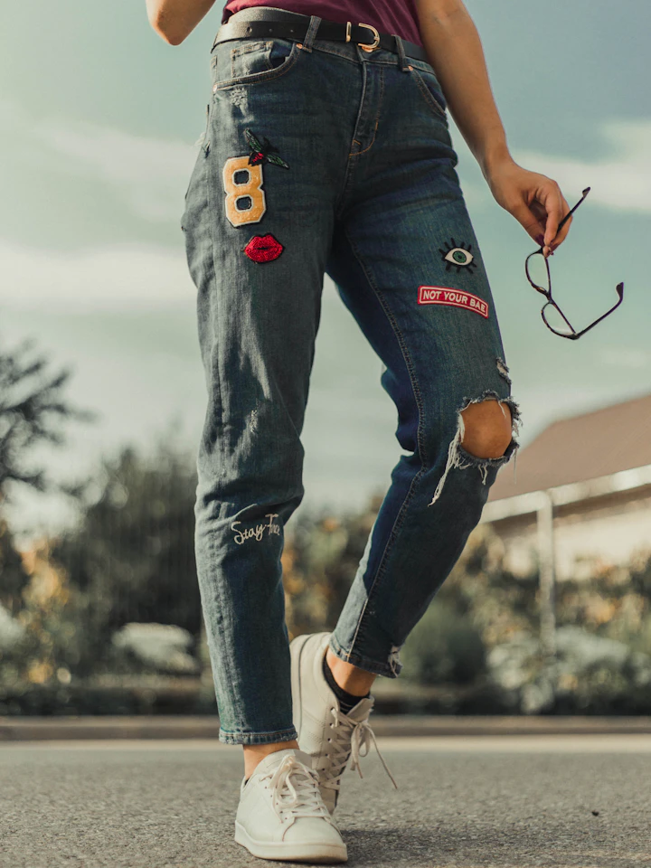
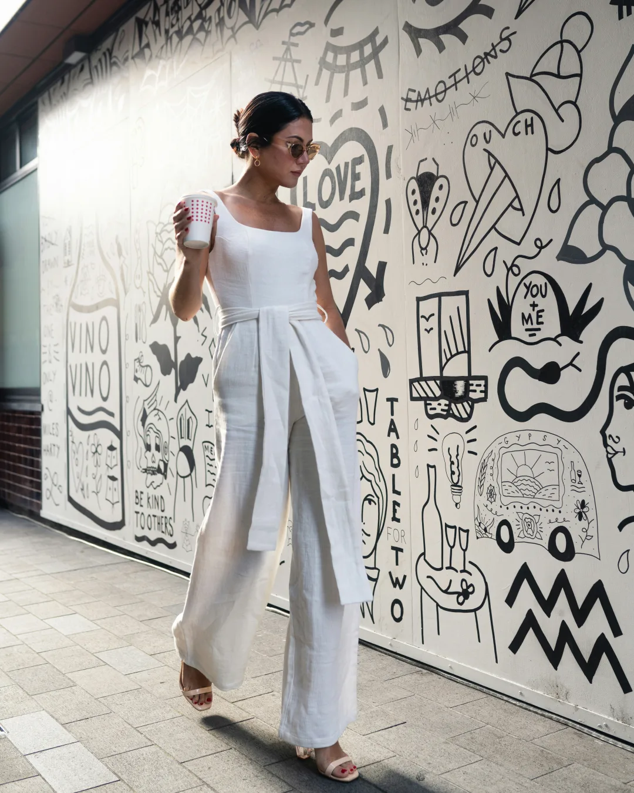

01 / PHOTOGRAPHERS
カメラマン
商品撮影やルックブック、発信に使う素材づくりに。
01
01 MAKE / 作る

形、色、プリントの位置、刺繍、ブランドタグ。項目ごとに選び、ブランドの仕様として確定します。

ベースになる無地の服を、仕様に合わせて選ぶ。
プリントや刺繍の種類と位置を、製造指示として定める。
ブランドネームやタグを、服の仕様に含める。

確定した仕様に対応する製造を手配します。型紙からの製作や特殊加工は、内容を確認したうえで可否をお返しします。
シルエット、色、ディテール。
仕様にして、工場へ渡す。
完成した服は、ブランドの販路で届ける。
着られた結果が、次の判断材料になる。
次の仕様は、そこから決める。
Wear Your Imagination.
02 SHOWROOM / 届ける
製造の次は、写真と発信です。Showroomは、ブランドとカメラマン、モデル、インフルエンサーを案件でつなぎます。世界観に合う相手に、撮影やPRを依頼できます。
01 / PHOTOGRAPHERS
商品撮影やルックブック、発信に使う素材づくりに。

02 / MODELS
シルエットや着こなしで、ブランドの世界観を伝える。

03 / INFLUENCERS
投稿を通じて、服やブランドを知ってもらうきっかけをつくる。
ご利用の流れ
アイテム、加工、数量を選び、製造に必要な情報を仕様書にまとめます。
仕様に対する金額、納期、対応可否を確認します。
内容に合意したうえで発注・決済へ。確定した仕様に沿って製造します。
販売はブランドの販路で行います。撮影やPRが必要なら、Showroomを利用できます。
FAQ
アイテム、素材、加工、数量などの項目を順に選び、製造用の仕様書として出力します。書式を別に用意する必要はありません。
1着から製造できます。対応する仕様と金額は、アイテム、加工、数量によって異なります。
無地のボディへのプリント、刺繍、タグ付けを中心に対応します。型紙からの製作や特殊仕様は、内容を確認して可否をお返しします。
アイテム、加工、数量などの仕様をもとに提示します。定型の内容は画面上で確認でき、個別確認が必要な内容は確認後にご案内します。発注前に金額を確認できます。
まず仕様書を作成し、登録して保存・見積もりを受け取ります。アイテム、素材、加工、数量をまとめるところから始めてください。
アイテム、加工、数量、製造時期によって異なります。納期は見積もり時にご案内します。
ブランドアカウントでの申請が必要です。MAKEの製造とは別に、撮影やPRを依頼するときに利用します。料金は依頼ごとに別途決まります。
販売はブランド自身の販路で行います。Stitchifyは製造を担い、Showroomでは撮影とPRの依頼を受けます。売上や販売数は保証しません。